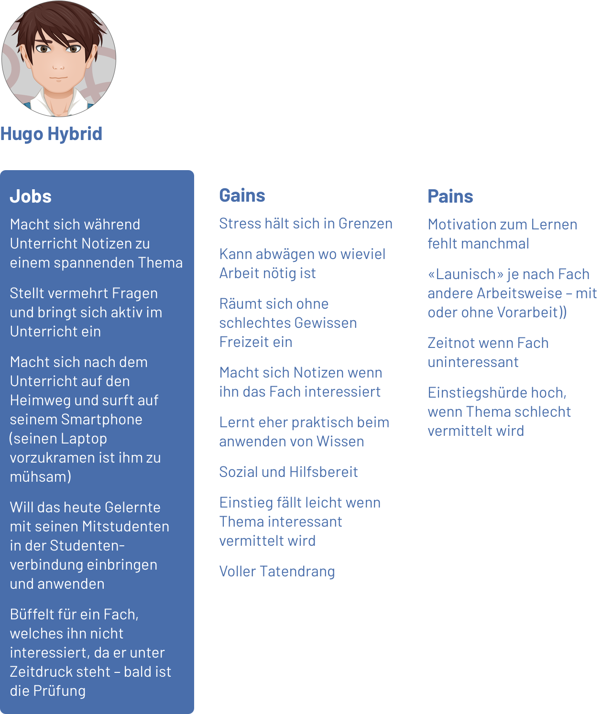
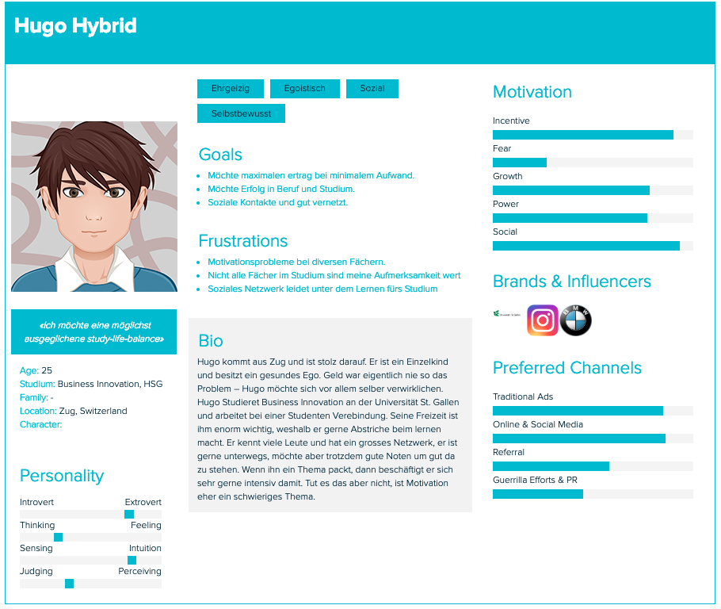
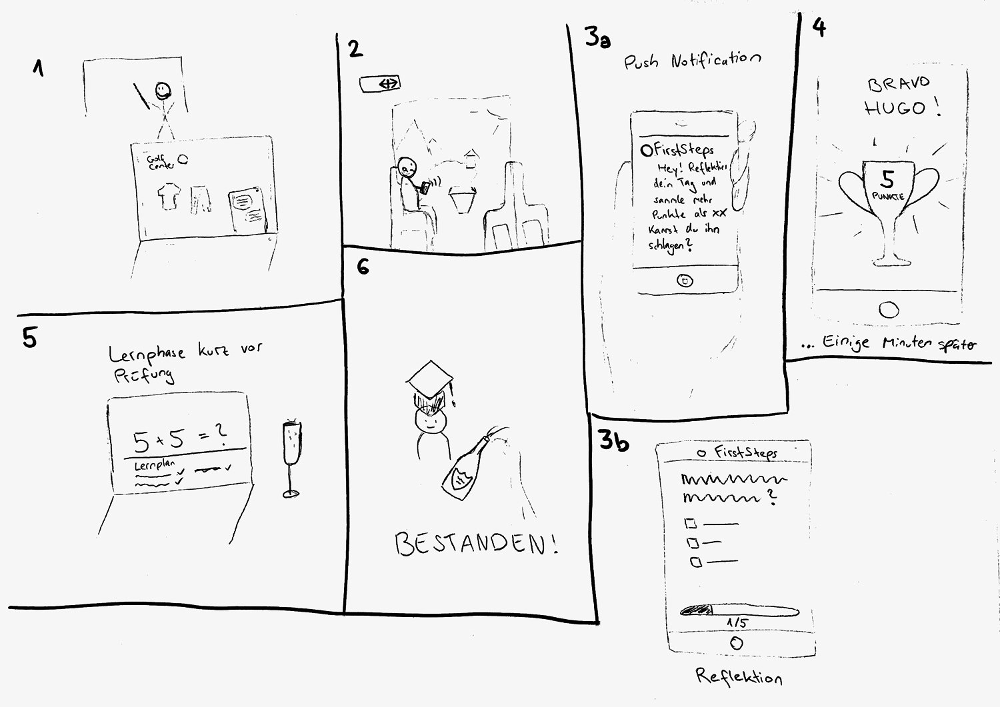
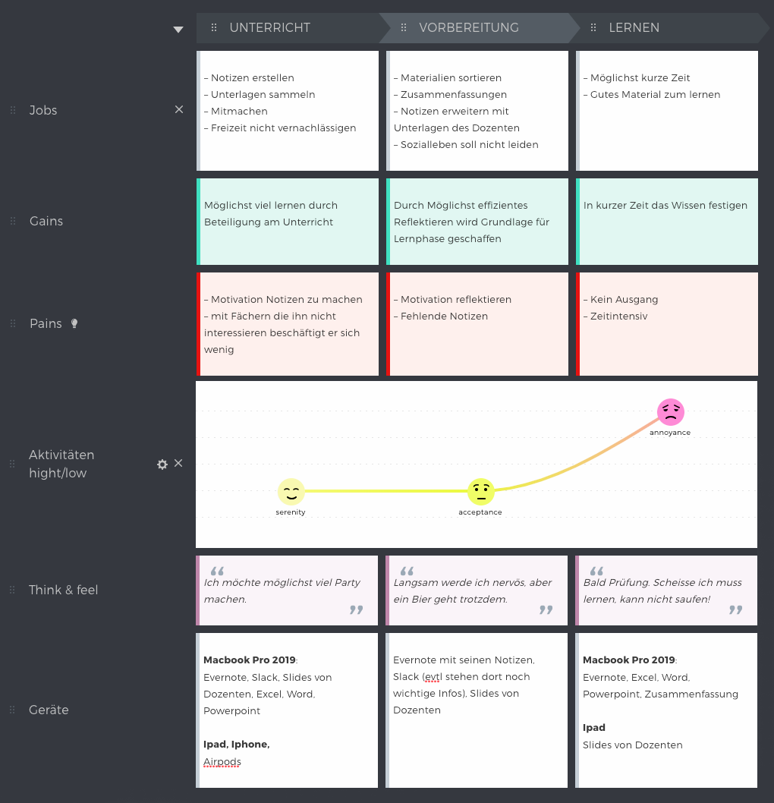

Hier zusammengefasst sieht man die Aufgaben, Probleme (Jobs) welche Hugo, ohne den Gebrauch unseres Produktes, lösen muss, an welche Herausforderungen (Pains) er dabei stösst und was davon ein positives Erlebnis (Gains) erzielt.

Kurzbio von Hugo Hybrid.

Wie wird unser Produkt im Alltag von Hugo eingesetzt?
Szene 1-6: Hugo interessiert sich nicht für die Vorlesung. Auf dem Heimweg erhält er eine Pushbenachrichtigung der Bocado App. Die Nachricht lautet: Hey Hugo! Reflektiere deine Mathematik Stunde und schlage Edi, indem du mehr Punkte erzielst. Hugo löst die 5 Fragen. Einige Minuten später hat Hugo das Spiel gewonnen und es wird ein Pokal angezeigt. Hugo hat Edi geschlagen und bekommt 5 Punkte. Hugo lernt erfolgreich und hat seinen Lernplan im Griff. So besteht er seine Prüfungen ohne Probleme.
Szene 1-6: Hugo interessiert sich nicht für die Vorlesung. Auf dem Heimweg erhält er eine Pushbenachrichtigung der Bocado App. Die Nachricht lautet: Hey Hugo! Reflektiere deine Mathematik Stunde und schlage Edi, indem du mehr Punkte erzielst. Hugo löst die 5 Fragen. Einige Minuten später hat Hugo das Spiel gewonnen und es wird ein Pokal angezeigt. Hugo hat Edi geschlagen und bekommt 5 Punkte. Hugo lernt erfolgreich und hat seinen Lernplan im Griff. So besteht er seine Prüfungen ohne Probleme.

Mit der User Journey Map wird das Nutzererlebnis eines potentiellen Users ohne das Produkt visualisiert. Es beschreibt die Nutzung und Gefühle des Users über einen bestimmten Zeitraum.